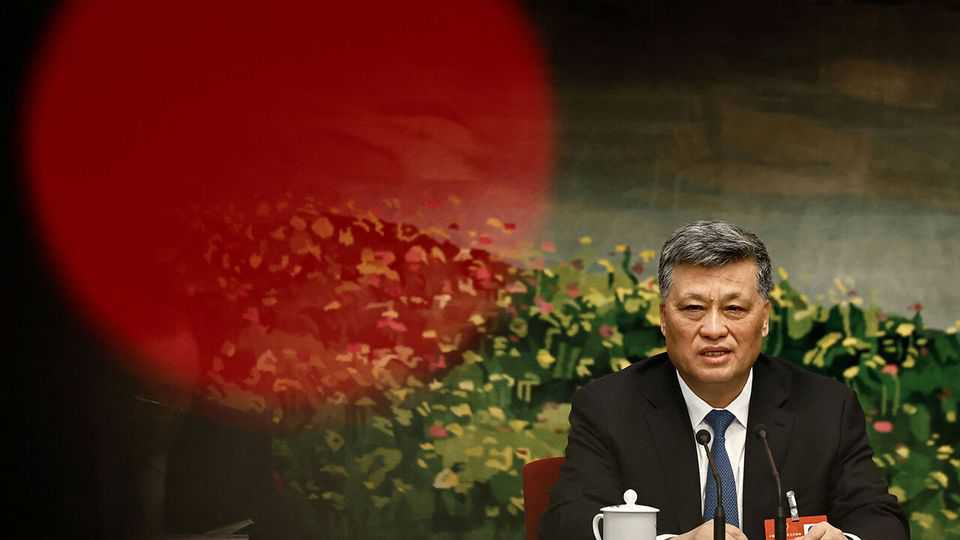

Xi Jinping expels another leader from his top team
He has set a record for booting out members of the Politburo
July 16th 2026

CHINA’S POLITICAL system prides itself on stability. Reshuffles of core leaders normally happen only every five years. But Xi Jinping has been taking the axe to members of his team at a rate not seen since the days of Mao Zedong. The latest to fall is Ma Xingrui, who until last year was the Communist Party boss of the far-western region of Xinjiang. State media said he had been stripped of his party membership for “extremely serious” corruption and his case handed to prosecutors. Another seat on the ruling Politburo—now down to 21 active members from its initial 24—has thus fallen vacant.
Mr Ma’s downfall is no surprise. Once a celebrated aerospace engineer who helped oversee lunar-exploration projects, he has long been absent from major events. In April the party said he was being investigated for “serious violations” of its rules and the law. Now it has publicly accused him of accepting “huge amounts” in bribes, engaging in “large-scale family corruption” and using his power and money to gain sexual favours.
Since the Mao era, charges of graft have almost always been laid against those expelled from the Politburo. Such wrongdoing is easier to explain to the public than revealing what is often suspected to be the main reason: political tension with the party chief. In this case, however, there has been little official hint or plausible rumour of serious political friction between Mr Ma and Mr Xi. Egregious corruption may be enough to explain his ousting—not that Mr Ma will be able to comment publicly or deny the charges against him.
His removal from the Politburo is a reminder of Mr Xi’s willingness to lash out. Since the most recent five-yearly party congress in 2022, two defence ministers, a foreign minister and dozens of high-ranking military officers have been purged. The armed forces’ two most senior generals have fallen: He Weidong was expelled from the Politburo and Zhang Youxia is under investigation and all but certain to lose his Politburo seat, too. Since Mr Xi took power in 2012, three Politburo members have been dismissed—the most under any leader post-Mao. (The other was Sun Zhengcai in 2017, once considered to be a potential successor to Mr Xi.)
Mr Ma can expect, at a minimum, to spend a very long time behind bars. No former Politburo member has been executed, but that is an unreliable guide to his likely fate. Mr Xi is a norm-breaker. ■
Subscribers can sign up to Drum Tower, our new weekly newsletter, to understand what the world makes of China—and what China makes of the world.